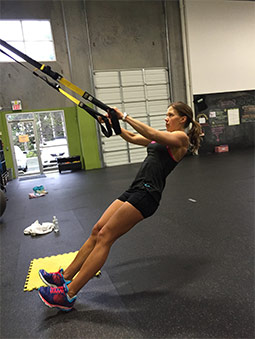
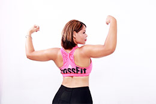
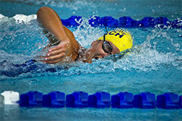

Услуги
-
 ФитнесФитнес-это основное направление в нашем центре. Открыто 6 залов для занятий с 7-00 до 22-00. Работают 24 фитнес-тренера, есть авторские и классические программы для похудения, восстановления фигуры, здоровья и молодости. Занятия с персональным тренером помогут достичь максимального результата в сжатые скроки.
ФитнесФитнес-это основное направление в нашем центре. Открыто 6 залов для занятий с 7-00 до 22-00. Работают 24 фитнес-тренера, есть авторские и классические программы для похудения, восстановления фигуры, здоровья и молодости. Занятия с персональным тренером помогут достичь максимального результата в сжатые скроки. -
Личный диетологПоможет вам получить более заметный результат от тренировок. Создаст меню на каждый день, с учетом вкусовых предпочтений и особенностей здоровья. Проанализирует текуший рацион и укажет на ошибки. Поможет сделать питание разнообразным и полезным, объяснит доступно о важной роли тех или иных витаминов и микроэлементов.
-
 ЙогаГармония души и тела - это базовая составляющая здоровья и красоты. Наш зал для занятий йони открыт для людей всех возрастов без ограничений. Отдельным направлением является йога для беременных с более щадящей программой. Йога тренеры имеют сертификаты и являются победителями международных конкурсов.
ЙогаГармония души и тела - это базовая составляющая здоровья и красоты. Наш зал для занятий йони открыт для людей всех возрастов без ограничений. Отдельным направлением является йога для беременных с более щадящей программой. Йога тренеры имеют сертификаты и являются победителями международных конкурсов. -
Петли TPXНовое направление для вашего центра, которое стало одним из самых популярных и востребованных. Программа TPX Suspension Training создана для людей с начальным уровнем подготовки и позволяет эффективно тренироваться, используя нарастающую нагрузку, которая зависит от силы и массы человека. Петли усиливают ловкость, гибкость и подвижность. В нашем центре проводятся индивидуальные и групповые тренировки TPX.
-
КроссфитАвторская запатентованная программа тренировки, включающая элементы тяжелой атлетики, занятий с гирями, гимнастики. Данная программа безупречно подходит для ежедневных тренировко людям с сидячим образом жизни. Преимущество кроссфита в том, что он ожинаково хорошо воспринимается и мужчинами, и женщинами и подходит для семейных групповых тренировок. Высокая эффективность программы обусловлена чуткими рекомендациями наших сертефицированных тренеров.
-
БасейнБольшой 50 метровый бассейн, разделенный на 6 дорожек, позволит заниматься индивидуальным плаванием или аквааэробикой. Занятия проводит сертифицированный тренер - Ситник Ирина Валерьевна, известная своими успехами в школе подготовки олимпийского резерва. В бассейне есть место для занятий с детьми (ежедневно с 12-00 дл 14-00), а так же провродится аквааэробика для беременных каждый день в 10-00 и 19-00.